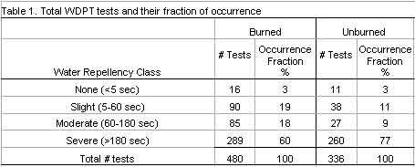

|
Infiltration Rates
After Wildfire in the Bitterroot Valley
Juli
A. Brady
Masters Student Agricultural Engineering
University of California - Davis
Davis, California |
Peter
R. Robichaud
Research Engineer
USDA-Forest Service
Rocky Mountain Research Station
Moscow, Idaho |
Fredrick
B. Pierson, Jr.
Research Soil Scientist
USDA-Agricultural Research Service
Northwest Watershed Research Center
Boise, Idaho |
|
Abstract:
Recent fires have renewed interest in fire's
effect on different components of the ecosystem, in particular fire's effects
on infiltration and runoff. Forests subjected to high severity burns often develop
water repellent soil conditions. Under this condition, the infiltration of water
into the soil is lowered and consequently additional runoff occurs. Increased
runoff can contribute to surface erosion and lead to sediment deposition in
downstream areas.
In this study, a rainfall simulator was used to compare infiltration rates from
plots located in high severity burned areas to plots in undisturbed areas on
the Sula Ranger District, Bitterroot National Forest in western Montana after
the 2000 fire season. Simulated rainfall was applied to 102 0.5 m2 plots for
60 min at 100 mm hr-1. Bottles collected runoff at 1 and 2-min intervals.
There were 15 plots for each of the four burned sites, and 14 plots for the
three unburned sites, half of which had their rootmat removed.
Results indicate naturally occurring water
repellent soil conditions of the surface on the unburned, rootmat-removed treatment,
which had the lowest infiltration rates. The burned plots on the other hand
had a water repellent layer centimeters beneath the soil surface. This allowed
for some water storage in the surface layer while also maintaining low infiltration
rates even below what was expected, especially towards the end of the simulation
runs. These results are most likely due to the extremely dry state of the soil
and the natural water repellent condition that is common in volcanic ash-cap
soils.
Keywords: infiltration,
hydrophobicity, rainfall simulator, burn severity, runoff, fires, ash-cap soil
Introduction
Wildfires are naturally occurring events
that act as important disturbance mechanisms for ecosystems. Over the last century,
land management agencies have intentionally suppressed wildfires under the conjecture
that fires are destructive. Fire suppression allows forests to build up biomass,
which contributes to the development of high severity fires, particularly across
the western United States. When ignited, these large fuel loads may burn at
higher intensities and longer durations than under most periodic fire cycles
resulting in high severity fires. These fire behavior conditions transfer enormous
amounts of heat to the mineral soil (Robichaud at al., 2000). The intense heat
can alter the mineral soil structure by closing soil pores (Wells et al., 1979)
and destroying fine roots, fire can also reduce soil productivity and increase
runoff, thereby causing increased watershed response and downstream sedimentation
(Robichaud et al., 2000).
The measurement of fire severity is qualitative
and based on the effects the fire has on site resources (Hartford and Frandsen,
1992; Ryan and Noste, 1983). As more forest floor is consumed, more heat is
generated, and the degree of burn severity increases. Increased severity gives
rise to the potential development of water repellent soil conditions. Water
repellency develops when hydrophobic organic matter is vaporized under intense
heat from a severe burn and then condenses onto cooler underlying soil layers
creating a layer impermeable to water (DeBano, 1966 and 1981; DeBano et al.,
1998). The water repellency of soils decreases infiltration rates (Robichaud,
2000) thus leading to an increase in water runoff and downstream sediment yields
(Wells et al., 1979). In addition to the water repellency developed in a severe
burn, the infiltration rates after wildfires decrease by the sealing of soil
pores (Wells et al., 1979), and the exposed soil can be transported easily as
sediment (White and Wells, 1982; Giovannini and Lucchesi, 1983; Scott et al.,1998).
Variable degrees of water repellency develop
in soils after wildfires. Parameters governing this development are soil texture,
antecedent moisture content, fire intensity, and the amount of time following
the fire. DeBano (1981) and Robichaud (2000) suggest that infiltration may decrease
due to the fire, but will increase with time because the hydrophobic substances
responsible for water repellency are slightly water-soluble and slowly dissolve,
thereby increasing wettability (Robichaud, 2000). In general, water repellent
soil conditions are broken up or washed away within one to two years after the
fire (Robichaud, 2000). Studies have also shown that Northern Rocky Mountain
forest soils often consist of volcanic ash-cap soils which, when dry and unheated,
promote naturally occurring water repellent conditions (Robichaud and Hungerford,
2000).
The objective of this study was to evaluate
the effect of high severity fire on infiltration rates into a naturally water
repellent ash-cap soil. Our hypothesis was that the severely burned area would
have less infiltration due to the water repellent soil condition caused by the
fire, but unburned areas would also show traces of pre-existing water repellency.
Methods and Site Description
The study was conducted on the Sula Ranger
District of the Bitterroot National Forest in Western Montana during the fall
of 2000. Slopes of the plots within the studied areas ranged from 25 to 55 percent
with dominantly west-southwestern aspects. The predominant soil is derived from
volcanic ash over highly weathered granite and is classified as a sandy skeletal
Andic-Dystrocryept. Elevation of the area was approximately 1,950 meters. Vegetation
of the area consisted of sub-alpine fir and Menziesia.
The burned study area is located on White
Stallion Mountain in the Upper North Fork Rye Creek area. A lightning strike
ignited this area and 40 % of the total burned area of 101,000 ha suffered a
high severity burn condition as defined by Ryan and Noste (1983). The fire killed
all standing trees and consumed all vegetative fuels, leaving the mineral soil
covered with ash. Four sites were selected within the study area based on their
slope, aspect, proximity to the road, and similar soil and vegetative characteristics.
On each of the four sites, 15 0.5 m2 plots were randomly located.
The plots were bordered by 15 cm wide sheet metal inserted vertically 5 cm into
the mineral soil.
Three sites were selected in an unburned
area located approximately 3 km north of the burned area. These selected sites
had slope, aspect, soil type and vegetative characteristics similar to the burned
area. On each of the three sites, 14 0.5 m2 plots were selected.
For each site, seven plots had the rootmat removed, leaving the mineral soil
exposed, and the other seven plots were not disturbed. The seven undisturbed
plots were intended to show the effects organic vegetative matter has on infiltration.
A simulated rainfall event was applied to each of the 102 plots for 60 minutes
using the USDA-Forest Service and the USDA-Agricultural Research Service oscillating
nozzle rainfall simulators. The mean rainfall intensity was 100 mm hr-1.
The rainfall events were conducted on the plots with the existing soil moisture
condition. Two soil moisture probes were inserted at 5 and 10 cm below the surface
of the plot to monitor changing moisture conditions during the rainfall event.
A covered trough at the low end of each plot funneled runoff water and sediment
through a valved pipe for timed volume samples. The samples were manually collected
in 1000 ml bottles at 1-minute intervals for the first 14 minutes, then at 2-minute
intervals for the remainder of the 60-minute run. At the end of each run, any
sediment in the trough was washed into a sample bottle. All runoff samples were
weighed and oven-dried to determine total runoff volumes and sediment concentrations
in order to develop hydrographs and sedigraphs (Robichaud et al., 1994).
Post-burn sampling included the degree of
water repellency, depth of water penetration into the soil profile, ash depth,
and bulk density. At each plot before simulation began, water repellency was
measured using the water drop penetration time (WDPT) method (DeBano, 1981).
Eight drops of water were placed in a row on the mineral surface layer next
to each plot using an eyedropper. The time the drop remained on the surface
in a spherical state was recorded as the penetration time. The maximum time
was limited to 5 minutes. If the drop penetrated before 5 minutes then consecutive
drops were placed at 1 cm depth increments to a maximum depth of 6 cm. At each
increment they were timed for penetration.
Results and Discussion
The average hydrographs for the burned and
rootmat-removed treatments showed results that were counter to what was anticipated
(Fig.1). The burned plots were expected to produce the highest
amount of runoff, but the results showed the unburned plots, with the rootmat-removed,
produced the highest amount of runoff.
Figure
1. Average hydrographs from each of the three treatments
The
burned plots averaged approximately 75 mm hr-1 while the rootmat-removed
averaged approximately 90 mm hr-1. The three plot treatments all
produced hydrographs that increased quickly within the first seven minutes,
then leveled off and maintained fairly constant runoff rates until the simulated
rain event ended at 60 minutes. Robichaud (2000), suggested that under fire-induced
water repellent conditions, runoff rates should quickly peak and then begin
declining as the hydrophobic substances of the soil are broken down, thus increasing
infiltration over time (Fig 2b). He also showed that before a severe burn occurs,
little water repellency should exist within the soil (Fig. 2a). The undisturbed
hydrograph shows runoff occurring at approximately 13 mm hr-1 and
no significant detection of a water repellent condition. This is the outcome
expected from initially non-water repellent soils in which the organic surface
layer absorbs much of the water and slowly allows it to percolate through the
soil profile. The hydrograph in figure 2b represents his study for a similar
area after a severe burn. Severe water repellent conditions exist, but they
decrease as the water soluble hydrophobic substances are broken down and thus
the infiltration increases.
Figure
2. Hydrographs for a) undisturbed ground cover and b) severe burned,
soil type Typic Cryoboralf and Dystric Cryochrept from weathered rhyolite.
(Robichaud, 2000, Fig. 2)
Because
the unburned rootmat-removed plots in this study produced more runoff than did
the burned plots, the soil must have been naturally water repellent prior to
the experiment. To further validate this hypothesis, compare the runoff rates
for the undisturbed plots from the two soil types, Figs. 1 and 2a. The naturally
repellent soil averages a runoff rate around 65 mm hr-1 while the
non repellent soil averages around 15 mm hr-1. The studies conducted
in this paper and in Robichaud (2000) were within close proximity to one another
and used similar procedures. The results suggest that the different soils played
a part in infiltration rates. The previous study area involved soil types of
Typic Cryoboralf and Dystic Cryochrept, which are both formed from weathered
rhyolite. These soils do not exhibit naturally water repellent conditions. Ash-cap
soils are especially water repellent when low in moisture and unburned as shown
by lab studies conducted by Robichaud et al. (2000) where they simulated burn
treatments on different soil types. Additionally, Walsh et al. (1994) and Doerr
and Thomas (2000) concluded that soil water repellency is most severe in the
dry summer. When the experiments of this study were conducted during the fall
of 2000, the area had been suffering from a long drought period and low snowfall
from the previous winter.
Total infiltration was calculated through
a mass balance equation of rain applied minus the runoff that was captured in
the manually gathered samples. Within each treatment, the plots showed no significant
difference. T-tests, however, did show significant differences (α =0.05)
of the total infiltration values for the three treatments (Fig. 3). The rootmat-removed
treatment had the lowest mean infiltration (24 mm) followed by the burned treatment
(33 mm) and then the undisturbed treatment (46 mm). These infiltration values
correspond to the hydrographs in figure 1.
Figure 3. Box plot of the cumulative infiltration rates
for each
treatment. Treatments were significantly different at the α=0.05 level.
Another
factor affecting infiltration is the amount of surface storage that occurs in
different capacities for each of these treatments. It is also important to recognize
large variability that typically exists with these results due to the inherent
difference in site microtopography, fine root distribution, and root holes.
The WDPT tests and soil moisture probes
further explain the results that indicate naturally occurring water repellent
soil conditions, which affect infiltration and storage. A total of 480 WDPT
tests were run on the burned sites and 336 on the unburned sites. Both the rootmat-removed
and undisturbed plots are accounted for because the WDPT test is conducted on
mineral soil. Therefore, the vegetative cover is removed on all unburned plots
for the WDPT tests. The results of the WDPT tests show that for both unburned
and burned sites a large percentage of the tests, 77 % and 60 % respectively,
detected severe water repellency (>180 sec) within the soil profile (Table
1). Both treatments showed the same percentage of non-repellent soils at approximately
3 %. These percentages are further described in Table 2 in order to show where
the water repellency occurred within the soil profile.
Table
1. Total WDPT tests and their fraction of occurence

Table 2.
Fraction of WDPT tests conducted representing each severity level at different
depths of soil.
The
three classes of water repellency: slight, moderate, and severe, had unique
distribution patterns for the two treatments: burned and unburned. When water
repellency was detected from the WDPT tests on the unburned plots it occurred
on the surface 76, 63, and 80 % of the time for the respective severities of
slight, moderate, and severe. It then proceeded to decrease as the depth reached
3 cm. There was no evidence of water repellent soil below a depth of 3 cm on
the unburned sites. The burned areas, on the other hand, resulted in few tests
(5 % that were severe) which exhibited water repellency on the surface. These
results support the fact that natural water repellency is typical of dry soils
(DeBano, 1973; Dekker and Ritsema, 1994). The water repellent layer on the burned
plots was distributed from just below the surface to 3 cm depth. This provided
a thick layer of water repellency within the soil profile. Several tests showed
water repellency continuing down to 5 cm on these plots. This indicates the
fire causes a redistribution of the hydrophobic substance throughout the soil
profile while in the unburned condition it occurs primarily at the surface.
As a result, more runoff occurred from the rootmat-removed plots as shown from
the hydrographs. Generally these water repellent layers are broken down within
10 to 15 minutes after rain begins (Robichaud, 2000). This did not occur on
these plots. The fact that water repellency becomes distributed within the soil
profile when a soil is burned explains the results from two soil moisture probes.
The probes were placed at approximately 5 and 10 cm depths to monitor the changing
moisture conditions of the
soil (Fig 4).
The results from the soil probe data suggest
a combined effect of infiltration, runoff, and storage. Both soil probes detected
more moisture from the undisturbed and rootmat-removed plots than from the burned
plots. This is counter to what would be expected by the results of the runoff
hydrograph and cumulative infiltration box plots. A storage layer may account
for the difference. The distribution of the water repellent layer when the soil
is burned creates a surface that exhibits low water repellency and acts as a
small storage reservoir which allows water to accumulate in this layer. When
this layer becomes saturated the water continues to run off rather than infiltrate
because of the large water repellent region below the surface. This storage
capacity is by far smaller than the storage capacity of the organic surface
for the undisturbed plots. It is likely that the top organic layer holds a large
amount of water before it becomes saturated. At saturation the water hits the
water repellent surface of soil, which inhibits water infiltration. The soil
moisture probes in the rootmat-removed plots detected the high water content
because the top layer is water repellent and has almost no storage; thus a portion
of the water did infiltrate causing the higher moisture readings. The percentage
of water that infiltrates is higher than the others but low relative to the
amount of runoff.
Figure
4. Average volumetric water content readings for the three
treatments at depths of a) 5 cm and b) 10 cm for the duration of the rainfall
simulation.
Conclusion
This study showed that soil type plays a
role in the infiltration and runoff characteristics. Volcanic ash-cap soil have
naturally occurring water repellent characteristics, which prior to the fire
are concentrated on the surface layer. This was shown by the highest runoff
rates from the rootmat-removed sites and the high rate of runoff resulting from
the undisturbed vegetated plots. This water repellency diminished quickly with
increasing depth.
After a high severity burn, these ash-cap
soils no longer had a water repellent layer at the surface, but rather distributed
it into a layer between the surface and a 3 cm depth, sometimes extending to
5 cm depth. The top layer of the burned soil exhibited minimal water repellency
and thus acted as a small storage space for water while the thick layer of distributed
water repellent soil restricts water from infiltrating. The soil moisture detected
at depths within the soil profile suggested that the surface storage capacity
combined with the amount of runoff influenced infiltration.
Acknowledgements
The data collection for this study was funded
in part by the Joint Fire Sciences Program; the USDAFS Rocky Mountain Research
Station, Soil and Water Engineering Project, Moscow, Idaho; and the USDA Agricultural
Research Service, Northwest Watershed Research Center, Boise, Idaho. Special
thanks to the field teams and the Bitterroot National Forest.
Literature
Cited
DeBano, L.F. 1966. Formation of non-wettable soils…involves heat transfer
mechanism. Res.
Note PSW-132. USDA For. Serv., Pacific Southwest
Forest and Range Exp. Sta., Berkeley, Ca. 8pp.
DeBano, L.F. 1973. Water repellent soils: their implications in forestry. Journal
of Forestry. 71:220-223.
DeBano, L.F. 1981. Water Repellent Soils: a state of the art. Gen. Tech. Rpt.
PSW-46. USDA For. Serv.,
Pacific Southwest Forest and Range Exp.
Sta., Berkeley, Ca. 21pp.
DeBano, L.F., D.G. Neary, and P.F. Ffolliott. 1998. Fire's effect on ecosystems.
New York: John Wiley & Sons. 333pp.
Dekker, L.W. and C.J. Ritsema. 1994. How water moves in a water repellent sandy
soil 1.
Potential and actual water repellency. Water
Resour. Res. 30:2507-2517.
Doerr, S.H. and A.D. Thomas. 2000. The role of soil moisture in controlling
water repellency: new
evidence from forest soils in Portugal.
Journal of Hydrology. 231-232: 134-147.
Giovannini, G. and S. Lucchesi. 1983. Effect of fire on hydrophobic and cementing
substances of soil
aggregates. Soil Science. 136: 231-236.
Hartford, R.A. and W.H. Frandsen. 1992. When it's hot, it's hot--or maybe it's
not
(surface flaming may not portend extensive
soil heating). International Journal of Wildland Fire. 2:139-144.
Robichaud, P.R. 2000. Fire effects on infiltration rates after prescribed fire
in Northern Rocky Mountain
forests, USA. Journal of Hydrology. 231-232:220-229.
Robichaud, P.R. and R.D. Hungerford. 2000. Water repellency by laboratory burning
of four northern
Rocky Mountain forest soils. Journal of
Hydrology. 231-232:207-219.
Robichaud, P.R., R.T. Graham, and R.D. Hungerford. 1994. Onsite sediment production
and nutrient
transport from a low severity burn in the
interior northwest. In Proceedings of Interior Cedar-Hemlock-White
Pine Forests: Ecology and Management, March
1993, Spokane Wa: Department of Natural Resource Sciences,
Washington State University, Pullman, Wa.,
pp227-232.
Robichaud, P.R., J.L. Beyers, and D.G. Neary. 2000. Evaluating the effectiveness
of postfire rehabilitation
treatments. Gen. Tech. Rpt. RMRS-GTR-63.
pp85.
Ryan, K.C. and N.V. Noste. 1983. Evaluating prescribed fires. In: Lotan, J.E;
B.M. Kilgore; W.C. Fischer;
and R.W. Mutch (technical coordinators).
In: Symposium and Workshop of Wilderness Fire. Gen. Tech.
Rpt. INT-182. Ogden, UT. USDA Forest Service,
Intermountain Research Station: 230:238.
Scott, D.F., D.B. Versfeld, and W. Lesch. 1998. Erosion and sediment yield in
relation to afforestation and
fire in the mountains of the western Cape
Province, South Africa. South African Geographical Journal. 80:52-59.
Shakesby, R.A., S.H. Doerr, and R.P.D. Walsh. 2000. The erosional impact of
soil hydrophobicity:
current problems and future research directions.
Journal of Hydrology. 231-232:178-191.
Walsh, R.P.D., D. Boakes, C.O.A. Coelho, A.J.B. Gonçalves, R.A. Shakesby,
and A.D. Thomas.
1994. Impact of fire-induced hydrophobicity
and post-fire forest litter on overland flow in northern
and central Portugal. In: Proceedings of
the Second International Conference on Forest Fire Research,
November 1994, Coimbra, Portugal,vol. II,
pp1149-1159.
White, W.D., and S.G. Wells. 1982. Forest-fire devegetation and drainage basin
adjustments in mountainous
terrain. In: Proceedings of the 10th Geomorphology
Symposium, Binghamton, Boston, pp199-223.
Wells, C.G., R.E. Campbell, L.F. DeBano, C.E. Lewis, R.L. Lewis, E.C. Fredricksen,
R.C. Franklin,
R.C. Froelich, and P.H. Dunn. 1979. Effects
of fire on soil: a state-of-knowledge review. Gen. Tech.
Rpt. WO-7. Washington DC. USDA Forest Service.
pp34.
Originally published as:
Brady, J.; Robichaud, P.R.; Pierson, F.B. 2001. Infiltration
rates after wildfires in the Bitterroot Valley. ASAE paper number 01-8003,
presented at the 2001 ASAE Annual International Meeting sponsored by American
Society of Agricultural Engineers, Sacramento Convention Center, Sacramento,
California, USA, July 30--August 1, 2001. ASAE--2001: An Engineering Odyssey.
Technical Session 21: Forest soil erosion and water quality. St. Joseph,
MI: ASAE.
USDA Forest Service, Rocky Mountain
Research Station, Moscow Forestry Sciences Laboratory
https://forest.moscowfsl.wsu.edu/